AUDIT · RÉCUPÉRATION · OPTIMISATION
Récupérez ce que vos factures d'énergie vous ont coûté en trop.
SaveWatt analyse jusqu'à cinq ans de factures d'électricité et de gaz, détecte les anomalies, récupère les montants indûment facturés et optimise durablement vos contrats. Audit gratuit, sans avance, avec des honoraires uniquement sur les gains effectivement obtenus.
Bureau d'études indépendant · Paris · France
0 € d'avance
5 ans analysables
100 % indépendant
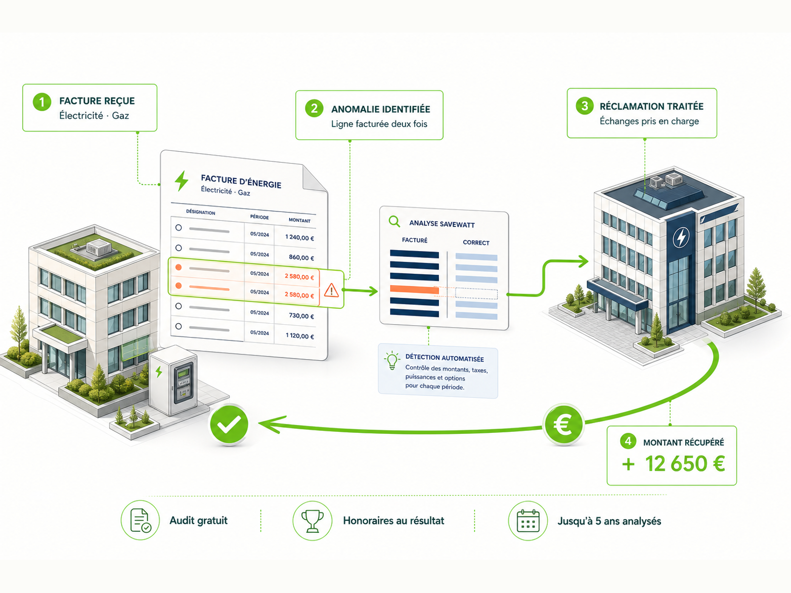
SaveWatt est un bureau d'études indépendant qui analyse les factures d'électricité et de gaz, identifie les surfacturations, accompagne la récupération des montants indus et optimise les contrats énergétiques des collectivités et entreprises.
01 — LE CONSTAT
Vos factures peuvent cacher des erreurs coûteuses.
Index erronés, puissance mal calibrée, taxes mal appliquées, options tarifaires inadaptées ou contrats jamais renégociés : ces écarts passent souvent inaperçus, faute de temps et d'expertise pour contrôler chaque ligne.
Erreurs de facturation
Index incohérents, doublons, abonnements non justifiés ou régularisations contestables peuvent augmenter la facture sans déclencher d'alerte interne.
Puissance souscrite inadaptée
Une puissance trop élevée alourdit l'abonnement. Une puissance trop faible peut entraîner des dépassements. Dans les deux cas, le mauvais calibrage coûte.
Taxes et TURPE mal appliqués
Accise, CTA, TURPE, exonérations et taux spécifiques forment un ensemble complexe où une mauvaise application peut durer plusieurs années.
Contrats devenus obsolètes
Une offre reconduite sans revue, un tarif ancien ou une option mal adaptée peut maintenir durablement un niveau de dépense évitable.
Jusqu'à cinq années d'historique peuvent être examinées selon la situation. Cet historique permet d'identifier les montants récupérables et les économies futures.
Vérifier si mon organisation est concernée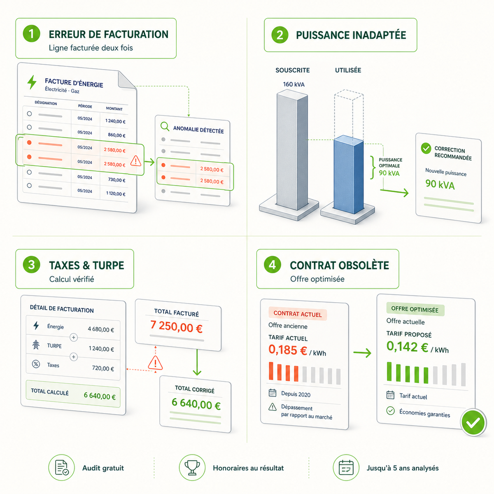
02 — NOTRE SOLUTION
Nous récupérons le passé et optimisons la suite.
SaveWatt ne vend pas d'énergie. Nous analysons vos dépenses, défendons vos intérêts face aux fournisseurs et gestionnaires de réseau, puis sécurisons les économies obtenues dans la durée.
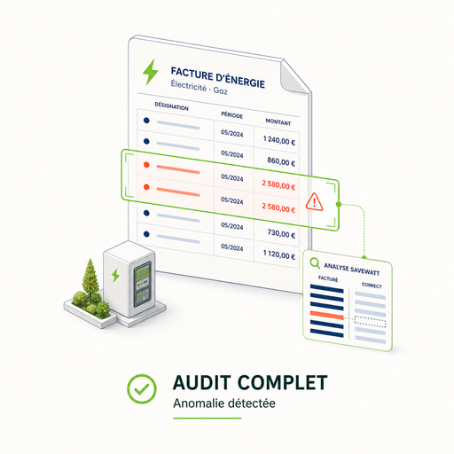
Audit complet des factures
Analyse ligne par ligne de l'électricité et du gaz : abonnements, consommations, taxes, TURPE, options tarifaires et régularisations.
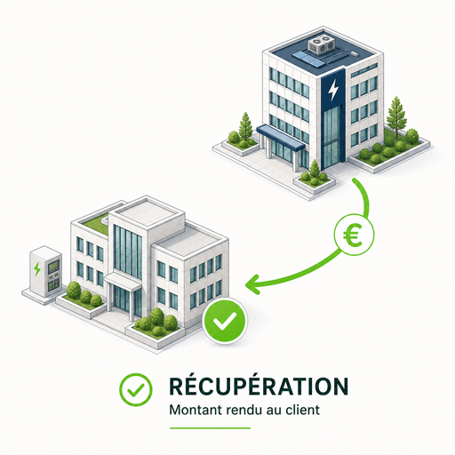
Récupération des trop-perçus
Constitution des dossiers de réclamation et suivi des échanges jusqu'au remboursement effectif des sommes reconnues comme indues.
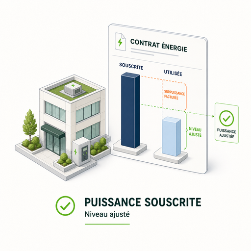
Optimisation de la puissance
Recalibrage de la puissance souscrite et des options tarifaires à partir de votre consommation réelle afin de réduire les coûts inutiles.
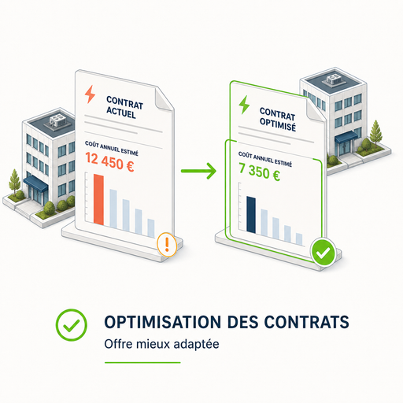
Renégociation des contrats
Préparation des renouvellements, comparaison des offres et accompagnement à la décision, y compris dans les contextes de marchés publics.
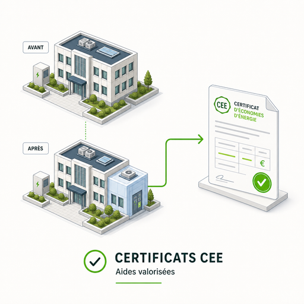
Valorisation des CEE
Identification des travaux éligibles et accompagnement dans la valorisation des Certificats d'Économies d'Énergie lorsque le dispositif est pertinent.
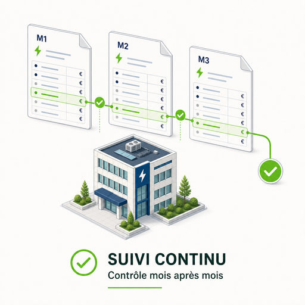
Veille et suivi continu
Contrôle périodique des factures et alerte en cas de dérive afin que les économies ne disparaissent pas au prochain changement de contrat.
03 — LA MÉTHODE
Vous transmettez les documents. Nous nous occupons du reste.
La démarche est conçue pour mobiliser le moins possible vos équipes. Une facture récente suffit pour démarrer le pré-diagnostic ; l'historique complet peut être rassemblé ensuite.
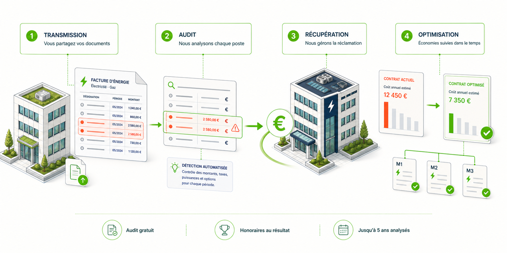
Transmission des factures et contrats
Vous nous communiquez une facture récente, puis les factures et contrats disponibles. Nous vous indiquons précisément les pièces utiles à l'analyse.
Audit et diagnostic chiffré
Nous contrôlons les postes de facturation, les taxes, la puissance, les options et les conditions contractuelles, puis nous présentons les anomalies et leviers identifiés.
Réclamation et récupération
Lorsque des montants indus sont confirmés, nous préparons les réclamations et suivons les échanges avec les acteurs concernés jusqu'à leur résolution.
Optimisation et suivi durable
Nous ajustons les paramètres et contrats concernés, puis organisons le suivi nécessaire pour préserver les économies dans le temps.
Notre rémunération est liée aux résultats. Aucun honoraire de récupération n'est dû si aucun gain n'est effectivement obtenu.
Recevoir mon pré-diagnostic04 — POUR QUI
Pour les organisations dont chaque point de dépense énergétique compte.
SaveWatt intervient lorsque les volumes, le nombre de sites ou la complexité contractuelle justifient une analyse spécialisée.
Collectivités, communes et EPCI
Bâtiments publics, écoles, éclairage, équipements sportifs, marchés d'énergie et groupements de commandes.
Voir la solution pour les collectivitésEntreprises et parcs multi-sites
Bureaux, commerces, hôtels, résidences, copropriétés et portefeuilles immobiliers répartis sur plusieurs sites.
Voir la solution multi-sites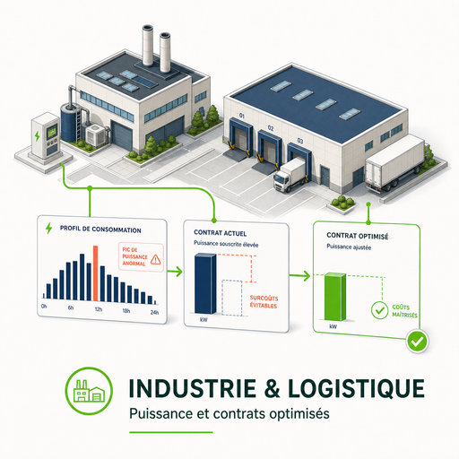
Industrie et logistique
Sites de production, entrepôts, plateformes logistiques et activités où la puissance et les profils de consommation pèsent fortement sur les coûts.
Évaluer mon potentielVotre facture dépasse environ 1 500 € par mois ? Le potentiel d'analyse peut déjà justifier un pré-diagnostic. Seuil indicatif. La pertinence de l'audit dépend du profil de consommation, des contrats et de l'historique disponible.
05 — POURQUOI SAVEWATT
Un intérêt aligné sur le vôtre.
Notre modèle, notre indépendance et notre méthode sont conçus pour une seule finalité : réduire les dépenses injustifiées et rendre les économies mesurables.
Sans risque financier initial
Pas d'avance ni de frais de dossier pour engager l'analyse.
100 % indépendant
SaveWatt ne vend ni énergie ni contrat fournisseur.
Expertise réglementaire
Analyse des mécanismes de facturation, du TURPE, des taxes, des contrats et des dispositifs applicables.
Zéro charge inutile pour vos équipes
Nous préparons les analyses, dossiers et échanges nécessaires.
Résultats documentés
Les anomalies, remboursements et optimisations sont suivis dans un reporting clair.
Confidentialité des données
Les factures, contrats et informations transmis sont traités dans un cadre défini et sécurisé.
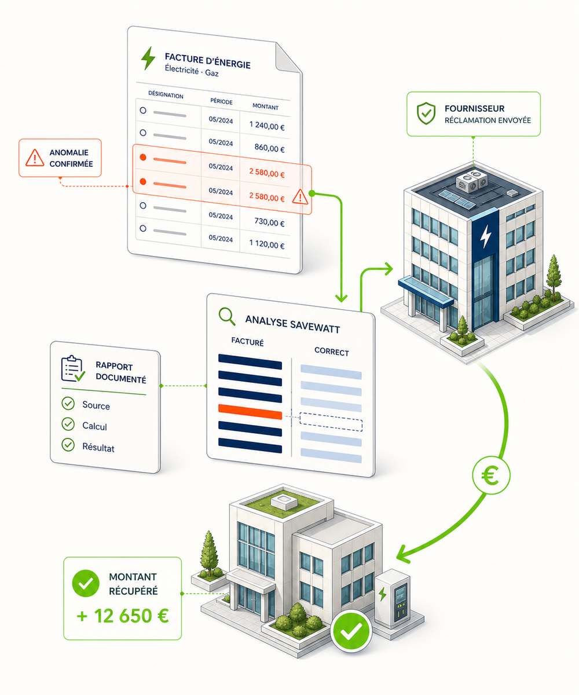
06 — EXEMPLES DE POTENTIEL
Des économies qui doivent pouvoir se lire, se vérifier et se suivre.
Le potentiel varie selon les volumes, les anomalies, les contrats et l'historique disponible. Les exemples ci-dessous illustrent des profils types et ne constituent pas une garantie de résultat.
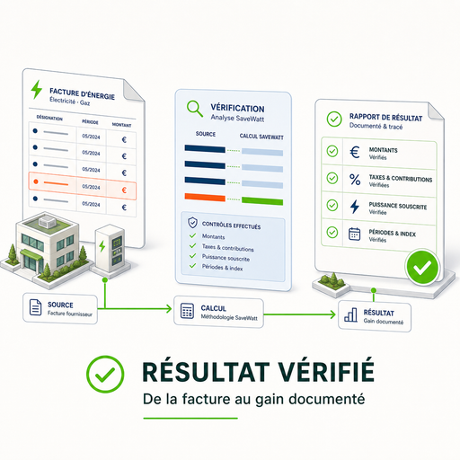
ProfilFacture annuelleMontant récupéréÉconomie
Commune d'environ 8 000 habitants290 000 €41 000 €-18 %
Site industriel540 000 €96 000 €-24 %
Groupe hôtelier180 000 €22 500 €-16 %
Copropriété tertiaire96 000 €14 800 €-21 %
Exemples illustratifs issus de profils types présentés dans la documentation SaveWatt. Les résultats réels dépendent de l'analyse des factures, contrats et données disponibles. À remplacer par des cas documentés avant toute présentation comme résultats clients.
Estimer mon potentiel d'économie07 — QUESTIONS FRÉQUENTES
Ce qu'il faut savoir avant de commencer.
Quels documents faut-il transmettre ?
Une facture récente suffit pour commencer le pré-diagnostic. Nous vous indiquerons ensuite les factures, contrats et annexes utiles pour approfondir l'analyse.
Faut-il disposer immédiatement de cinq années de factures ?
Non. L'analyse peut démarrer avec les documents disponibles. L'historique complémentaire est rassemblé ensuite lorsque son examen est pertinent.
Combien coûte l'audit ?
Le pré-diagnostic et l'audit initial sont présentés comme gratuits et sans engagement. Les conditions précises de rémunération au résultat doivent être définies dans la proposition contractuelle.
Que se passe-t-il si aucune économie n'est identifiée ?
Si aucun gain récupérable ou levier pertinent n'est confirmé, aucun honoraire de récupération au résultat n'est dû selon le modèle présenté.
Qui gère les réclamations auprès des fournisseurs ?
SaveWatt prépare les dossiers, structure les justificatifs et suit les échanges nécessaires avec les fournisseurs ou gestionnaires concernés.
À quelles organisations le service s'adresse-t-il ?
Le service vise principalement les collectivités, entreprises, sites industriels et organisations multi-sites dont les dépenses énergétiques justifient une analyse spécialisée.
Comment les données de facturation sont-elles protégées ?
Le formulaire et la proposition contractuelle doivent préciser les finalités du traitement, les destinataires, la durée de conservation et les droits applicables. Une notice de confidentialité doit apparaître directement sous le formulaire.
Combien de temps faut-il pour recevoir un premier retour ?
Le délai de réponse doit être confirmé par SaveWatt avant publication. Le formulaire affichera ensuite un engagement réaliste, par exemple un premier retour sous quelques jours ouvrés.
08 — PRÉ-DIAGNOSTIC EXPRESS
Estimez votre potentiel en 30 secondes.
Répondez à quelques questions simples. Vous obtenez immédiatement un score, une fourchette indicative et la liste des pièces à réunir avant un audit complet.
Ce que l'outil peut détecter sans API externe.
- 1Risque de trop-perçu sur factures passées.
- 2Potentiel d'optimisation contractuelle future.
- 3Signal CEE à vérifier si des travaux sont prévus.